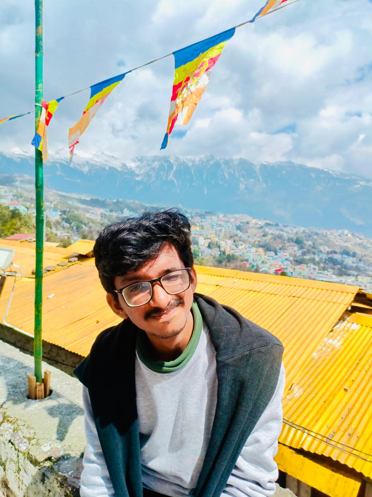
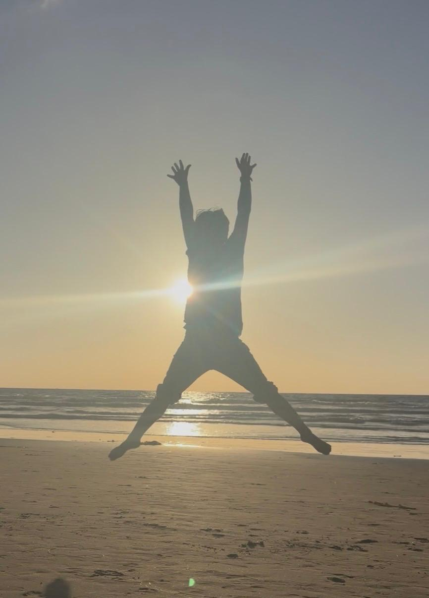

Entered through civil engineering and pulled steadily toward electronics, control and software, which is where the robotics started.
CivilECE minor

Hey there! I'm Akshit, currently pursuing my Masters in Electrical and Computer Engineering at UC San Diego.
I'm currently pursuing my Master's in Electrical and Computer Engineering at UC San Diego, specializing in Intelligent Systems, Robotics, and Control. My interest sits at the intersection of robotics and perception — building algorithms that borrow their intuition from how humans think and learn, then deploying them against real, physical problems.
Recent work spans humanoid control, autonomous navigation testing infrastructure, and reinforcement learning for classic control tasks.
Scroll to trace the path. Click any stop to expand it.
Entered through civil engineering and pulled steadily toward electronics, control and software, which is where the robotics started.
Led ideation and execution across club projects, including a self-balancing robot, an autonomous lake-cleaning robot and haptic navigation for the differently abled. Software head on the Yuvaan Mars rover (communication, sensor integration, navigation). Competed in rover challenges and Aquawar at Techniche.
Built an open-source navigation testing framework, implemented navigation controllers from papers, and contributed to manuscripts for ICRA and IROS.
Automated phone quality checks with defect-segmentation models, built a SAM2 and YOLO11m-seg auto-annotation pipeline, and optimized multi-model inference on Kubernetes.
Focused on humanoid robotics, perception and reinforcement learning.
PD-control of a Unitree G1 humanoid in MuJoCo through the SDK2 bridge, with a camera pipeline for localizing objects in the field of view.
A lightweight, plug-and-play Gazebo sandbox for dataset-driven testing of navigation pipelines, with GPU-accelerated field-of-view culling.
A REINFORCE policy-gradient agent for CartPole, trained in Gymnasium with MuJoCo and validated in both Gazebo Classic and MuJoCo.
A ROS-enabled autonomous surface vessel designed to automate the cleaning of large lakes.
Algorithms that borrow intuition from how humans think and learn.
Robot combat on a lake: Aquawar at Techniche.
An autonomous lake-cleaning boat, before any of the ML work.
Reach for the sky.
